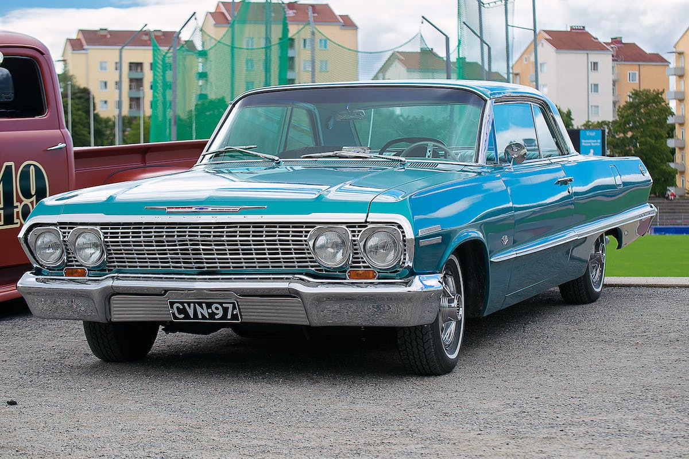
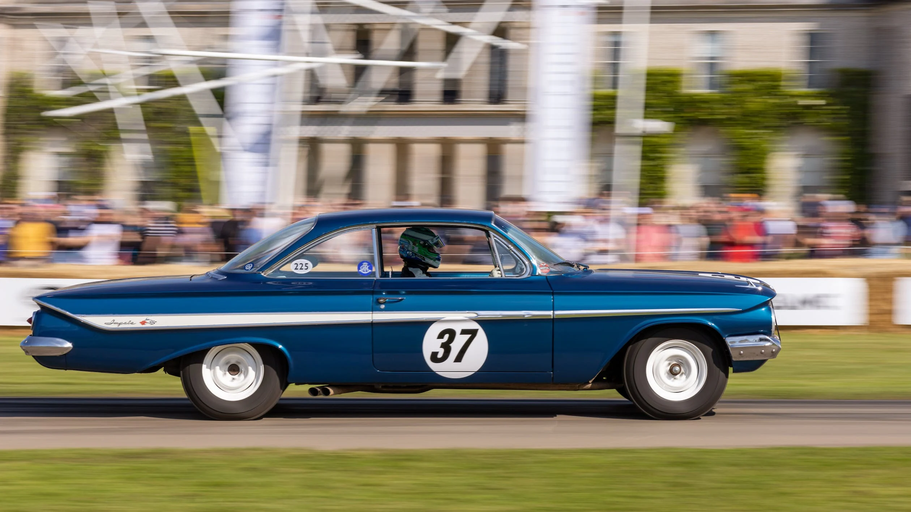
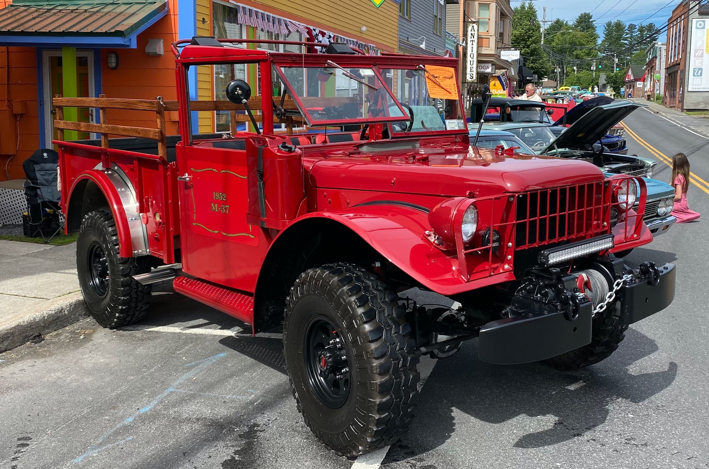
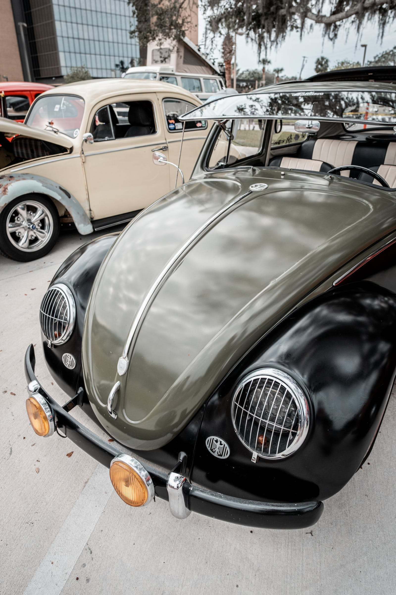

What these vehicles can become
Professional and Weekend car mechanics use their skills to restore old neglected abandoned cars and trucks to make them come back alive like these gems
You really should join them and see what you can save and put your own touch on them
Yes, bringing a vehicle back from the grave will cost you $ but it will also be worth it at the end.*
Research and buy your VW Parts from JBugs.com
Research and buy you Muscle Car Parts from ClassicMuscle.com
Resources
Some really good places to start researching:



* This is just my opinion or my 2¢ worth, now get out there and start wrenching!